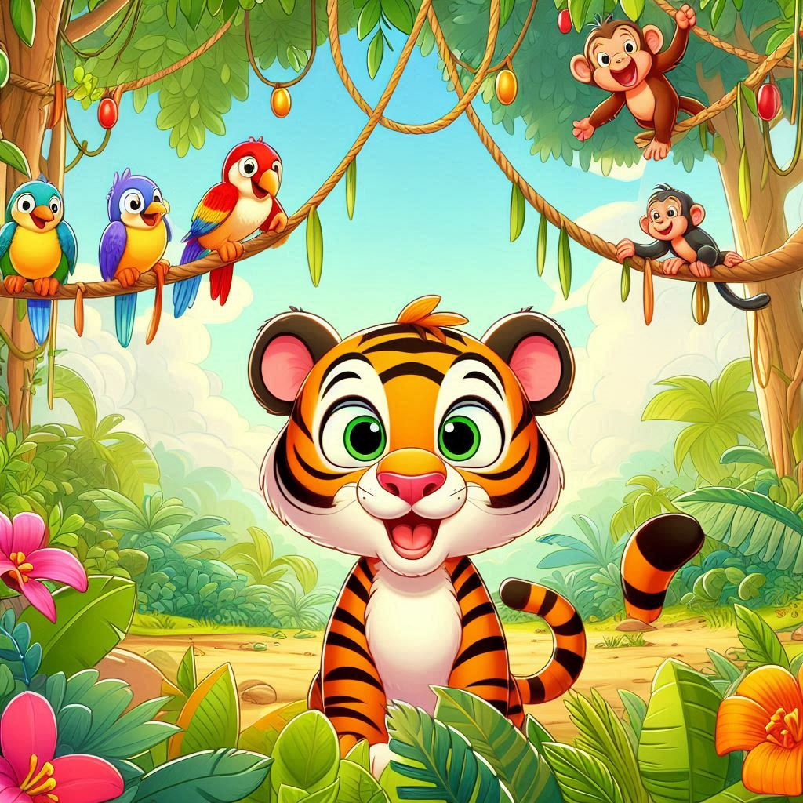
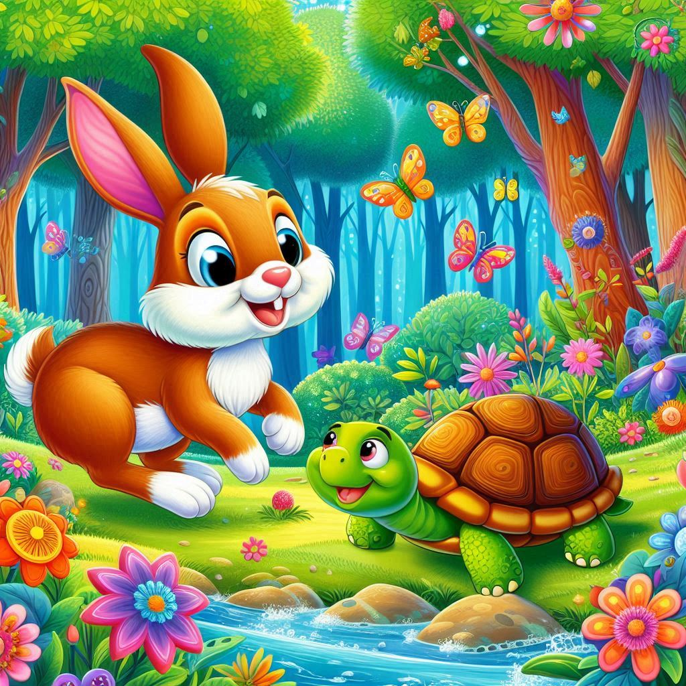
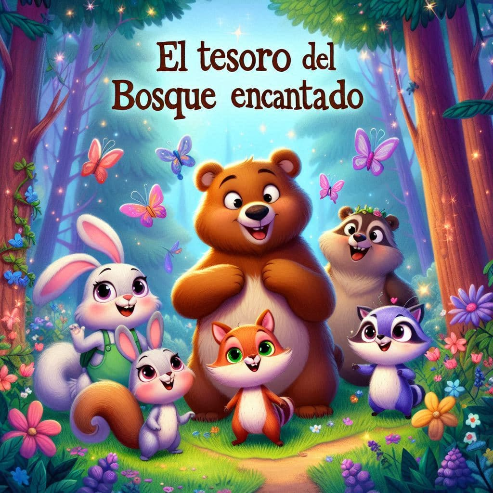

Cuentos Infantiles
Menú
Inicio
La Gran Aventura del Tigre Tito
La Carrera entre la Liebre y la Tortuga
El Tesoro del Bosque Encantado

La Gran Aventura del Tigre Tito

La Carrera entre la Liebre y la Tortuga

El Tesoro del Bosque Encantado
Tu navegador no soporta el elemento de video.
Puedes controlar la reproducción usando los controles del reproductor de video.